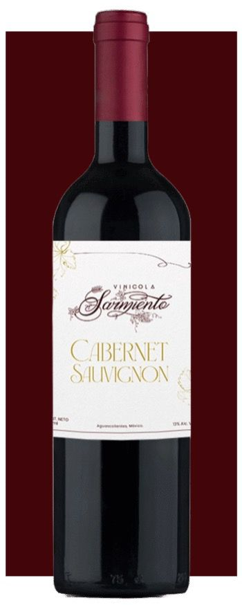
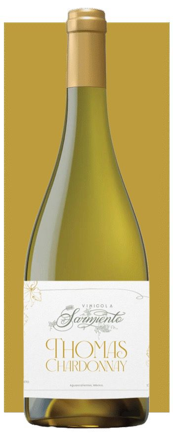
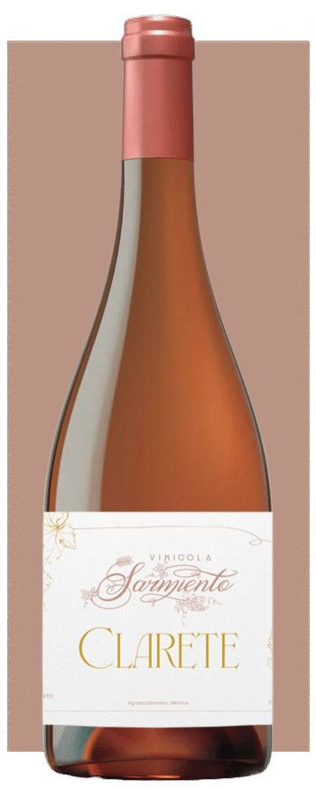
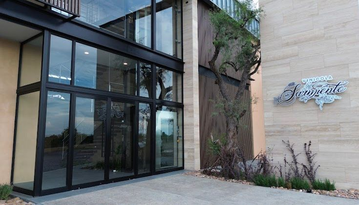
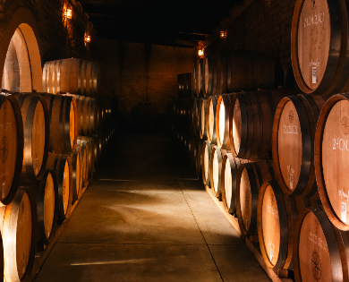

Tradición, pasión y calidad en cada botella. Descubre nuestra historia y nuestros vinos únicos.
En el corazón de Aguascalientes, Vinícola Sarmiento nace como un sueño que tomó raíz hace cinco años, cuando comenzamos a plantar nuestras uvas.
Hoy, ese esfuerzo da frutos en nuestra primera cosecha, convirtiéndose en vinos tintos, blancos y rosados de calidad excepcional.
El sarmiento, donde la vid se fortalece y crece, simboliza nuestro compromiso con la tradición y la innovación en la viticultura.
Cada botella de Vinícola Sarmiento es el reflejo de un suelo fértil, un clima ideal y la pasión de quienes creemos en el arte del vino.
Descubre y degusta la esencia de Aguascalientes en cada copa, donde la historia y el vino se entrelazan para brindar momentos inolvidables.
Vinícola Sarmiento

Visítanos y descubre nuestros vinos artesanales en un ambiente natural. Te esperamos para que vivas una experiencia única entre viñedos.

Origen: 100% Cabernet Sauvignon en óptima maduración.
Crianza: 4 meses en barrica de roble americano.
Notas: Color rubí profundo con aromas de frutos rojos maduros (cereza,grosella)con toques especializados (pimienta negra,anis).En boca es armonioso y sofisticado.

Origen: 100% uva Chardonnay en suelo arenoso-calcáreo.
Crianza: 6 meses en lías con un ligero toque de roble francés.
Notas: Color dorado pálido con aromas tropicales (piña y plátano).En bocas es untuosos,balanceado u elegante.

Origen: 85% Syrah, 15% uva blanca fermentadas juntas en Aguascalientes(1,900 metros de altura).
Crianza: Fermentación controlada.
Notas: Fresco y refrescante , con aromas y sabores a frutos rojos.Perfecto para ocasiones especiales.



